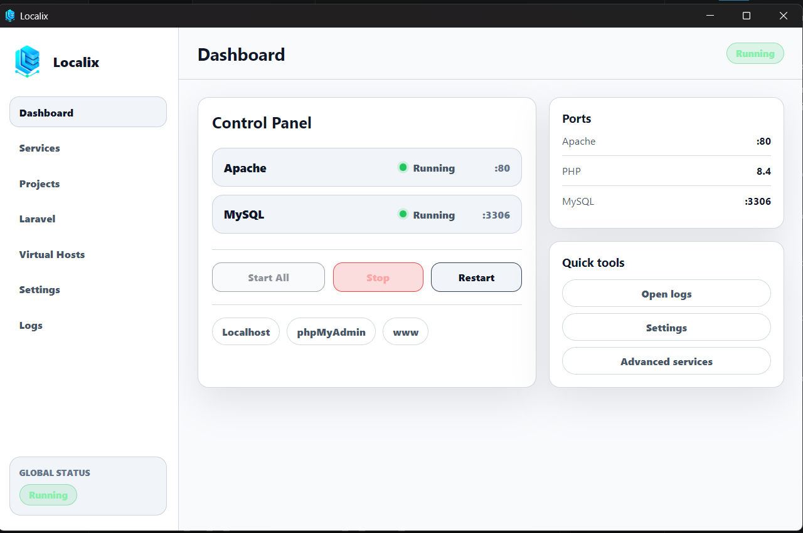

Apache, PHP 8.4, MySQL, dan phpMyAdmin dibundel ke dalam satu aplikasi desktop Windows yang bersih. Tanpa pusing konfigurasi. Tanpa layanan yang mengotori sistem Anda.

Mengapa Localix
Dibuat untuk pengembang yang menginginkan server lokal yang cepat dan bersih tanpa beban berlebih.
Jalankan atau hentikan Apache, PHP, dan MySQL bersama-sama atau secara terpisah dari satu panel kontrol.
Masukkan folder ke dalam www dan Localix akan mendeteksinya secara otomatis. Tanpa perlu konfigurasi manual.
Petakan proyek Anda ke domain .locx yang cantik seperti myapp.locx dalam hitungan detik.
Buat proyek Laravel baru langsung di dalam Localix menggunakan Composer dengan sekali klik.
MySQL berjalan sebagai proses terkelola di dalam Localix. Tidak ada polusi layanan Windows, uninstal bersih.
Mendukung tema terang, gelap, dan sistem. Nyaman di mata untuk sesi pengembangan yang panjang.
Memulai Cepat
Dari pengunduhan hingga localhost dalam waktu kurang dari dua menit.
Ambil localix.setup.exe atau versi portable dari GitHub Releases.
Jalankan installer. Tidak memerlukan runtime atau dependensi tambahan.
Klik Start All di dasbor. Apache dan MySQL langsung aktif seketika.
Tempatkan proyek Anda di www/ dan buka localhost/proyekanda di peramban.
FAQ